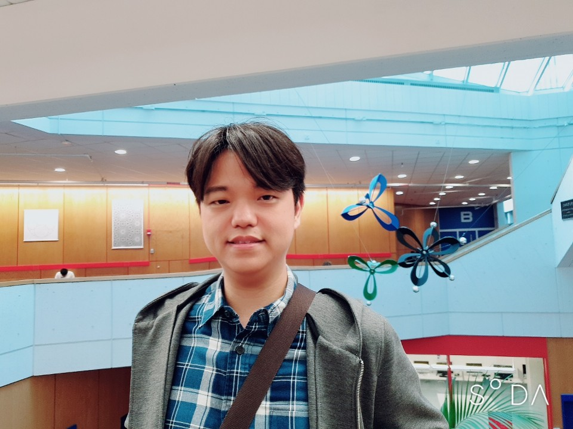

Changho Han

Postal address: Pure Mathematics, University of Waterloo, 200 University Avenue West
Waterloo, Ontario, Canada N2L 3G1
Email address: changho (dot) han (at) uwaterloo (dot) ca
Office: MC 6457
About me:
I am a Postdoctoral Fellow at the University of Waterloo.
My research is primarily in algebraic geometry. In particular, I am mainly interested in geometric and arithmetic properties of moduli spaces, and also interested in enumerative problems. See my
research statement for more details on my mathematical interests.
I got PhD degree in Mathematics at Harvard University. My graduate advisor is Joe Harris.
I was a Limited-Term Assistant Professor at the University of Georgia.
Here is my
CV.
Papers and preprints
- Arithmetic secant formulae for linear series on hyperelliptic curves, with Ethan Cotterill and Naizhen Zhang.
(in preparation).
- Counting points on $x^2+y^2 = z^4$ and 5-isogenies of elliptic curves over $\mathbb{Q}$, with Santiago Arango-Pi˜neros, Oana Padurariu, and Sun Woo Park.
(in preparation).
- Stable quadrics, admissible covers, and Kondo’s sextic K3 surfaces, with Anand Deopurkar.
(in preparation).
- Arithmetic inflection of superelliptic curves,
with Ethan Cotterill, Ignacio Darago, Cristhian Garay López,
and Tony Shaska.
Under revision at Michigan Mathematical Journal. pdf, arXiv
- Compact moduli of K3 surfaces with a nonsymplectic automorphism, with Valery Alexeev and Philip Engel.
Transactions of the American Mathematical Society Series B, 11 (2024). pp. 144-163. Online, pdf, arXiv
- Arithmetic inflection formulae for linear series on hyperelliptic curves,
with Ethan Cotterill and Ignacio Darago.
Mathematische Nachrichten, 00 (2023). pp. 1-29. Online, pdf, arXiv
- Enumerating odd-degree hyperelliptic curves and abelian surfaces over $\mathbb{P}^1$, with June Park.
Mathematische Zeitschrift, 304 (2023). Article no. 5. Online, Publisher's Correction, pdf, arXiv
- Stable log surfaces, admissible covers, and canonical curves of genus 4, with Anand Deopurkar.
Transactions of the American Mathematical Society, 374 (2021). no. 1, pp. 589-641. Online, pdf, arXiv, Thesis
- Arithmetic of the moduli of semistable elliptic surfaces, with June Park.
Mathematische Annalen, 375 (2019). pp 1745-1760. Online, pdf, arXiv
Teaching
I have taught the following at the University of Waterloo:
- Pmath 464/764, as an instructor (Introduction to Algebraic Geometry), Fall 2023
- Amath/Pmath 331, as an instructor (Applied Real Analysis), Fall 2023
- Amath/Pmath 332, as an instructor (Applied Complex Analysis), Winter 2023
- Math 127, as an instructor (Calculus 1 for the Sciences), Fall 2022
I have taught the following at the University of Georgia:
- Math 2700, as an instructor (Elementary Differential Equations), Spring 2022
- Math 2250, as an instructor (Calculus I), Fall 2021
- Math 2700, as an instructor (Elementary Differential Equations), Spring 2021
- Math 2250, as an instructor (Calculus I), Fall 2020
- Math 2250, as an instructor (Calculus I), Spring 2020
- Math 1113, as an instructor (precalculus), Fall 2019
I have taught the following courses at Harvard:
- Math 1b, as a coaching fellow (integration, series and differential equations) and as a teaching fellow, Spring 2019
- Math 1b, as a teaching fellow (integration, series and differential equations), Fall 2017
- Math 21b, as a teaching fellow (linear algebra and differential equations), Spring 2017
- Math 258Y, as a course assistant (graduate topics course on degenerations in algebraic geometry), Fall 2016
- Math 1b, as a teaching fellow (integration, series and differential equations), Fall 2015